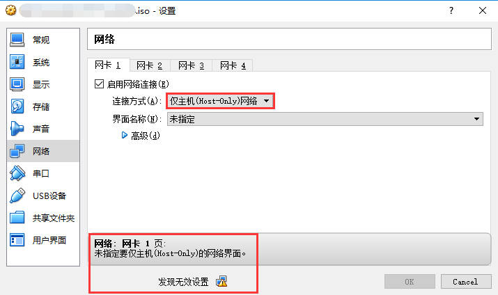
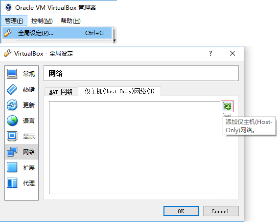
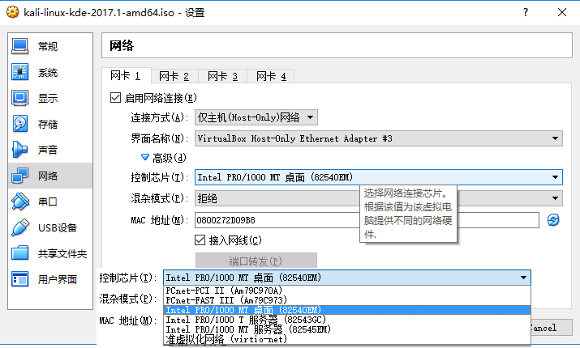
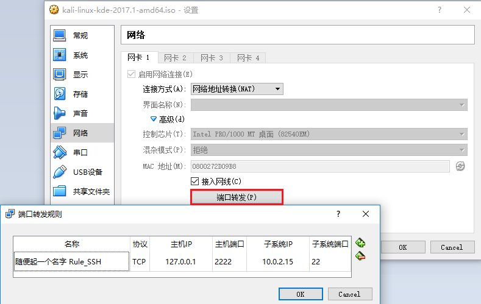

我在使用VirtualBox，使用的过程中遇到了一些问题，现将对应的解决方案记录于此。
设置虚机的网卡时，指定连接方式为”仅主机(Host-Only)网络”，然后出现错误提示”发现无效设置”。

分析：
应当是宿主机上的”VirtualBox Host-Only Ethernet Adapter”或类似名字的网卡有问题导致的。
解决方式：
查看宿主机上的所有网卡，若无类似的网卡则在VirtualBox上创建一个，若该网卡被禁用，则启用它。
在VirtualBox上创建”VirtualBox Host-Only Ethernet Adapter”的步骤：
管理->全局设定->网络->仅主机(Host-Only)网络->添加。

参考链接：
为什么vbox下host-only无法设置?宿主机是Win10 x64，虚机是kail-linux-amd64，设置了”仅主机(Host-Only)网络”，但是虚机无法自动分配IPv4地址，无法联网。
原来的设置如下：

解决方案：
将”控制芯片”换成其他几种试试。比如选择”PCnet-FAST Ⅲ (Am79C973)”试试。
备注说明：
大致意思是说，不同的操作系统应当择需使用对应的虚拟网卡。VirtualBox推荐的不一定是对的。同时，”PCNet FAST III”几乎支持所有的操作系统开箱即用。
参考链接：
Network adapters in Virtualbox virtual machines
在这里搜索”Virtual networking hardware”以查看各网卡的说明用VirtualBox以”网络地址转换(NAT)”方式创建的虚机，宿主机要怎么才能访问它呢?
解决方案：
① 给虚机再添加一块网卡，连接方式为”仅主机(Host-Only)网络”。
② 给这个虚机添加端口转发规则。就是将宿主机的某端口和虚机的某端口做一个映射。

参考链接：
快速理解VirtualBox的四种网络连接方式
VirtualBox的四种网络连接方式
VirtualBox虚拟机网络环境解析和搭建-NAT、桥接、Host-Only、Internal、端口映射